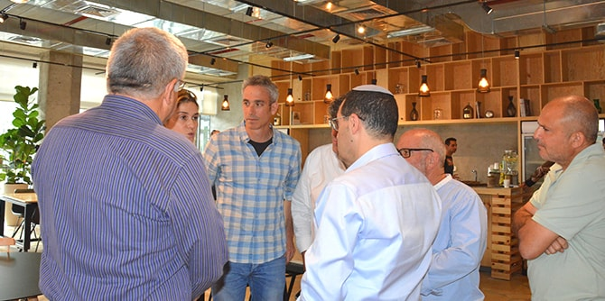

OpenValley's coworking spaces are designed for entrepreneurs who are active in the periphery, and offer an infrastructure that is tailored to the needs of entrepreneurs, startups and innovation pioneers. The campuses create cooperations and partnerships through networking and mentoring and provide assistance with business development and funding processes. The campus also runs socially-oriented activities that foster relations with the surrounding community.
On March 28, 2018, the participants in the Mandel Graduate Unit's roundtable series on technological education in Israel met with two of the OpenValley’s founders: Yossi Ackerman, former president and CEO of Elbit Systems, and a business mentor and start-up investor; and Ofir Dubovi, a founder of the Israeli flash storage company Kaminerio, an investor in start-up companies, and a leading figure in the senior management of Israeli hi-tech companies. The OpenValley founders explained that their goal was to create a supportive environment for start-ups and entrepreneurs from diverse fields, not just hi-tech, which would offer significant added value beyond the work space itself (in contrast to WeWork's model of shared office space).
The discussion also addressed the issue of technological vocational education in Israel. It was asserted that the situation in Israel has become unhealthily imbalanced, since education now favors technical subjects over the humanities, and this can be expected to impact the social realm. It was also suggested that phasing out vocational education, beyond its negative implications for vocation-specific training, harms the acquisition of basic skills related to working with tools. In addition, it was claimed that skilled manual labor is as important as any other area of knowledge, and that the widespread tendency to associate innovation and entrepreneurship only with hi-tech is mistaken, since the ability to “think outside the box” is required in all jobs and is relevant for every field.
The graduates discussed what the first step should be to implement change in the broad field of technological vocational education. Most of them agreed that it is most important to integrate the foundations of vocational education into comprehensive secondary schools in such a way that would make this knowledge accessible to all students, or to a wide range of students, without it being branded as a field meant exclusively for weak students or strong students.

{kind=link}